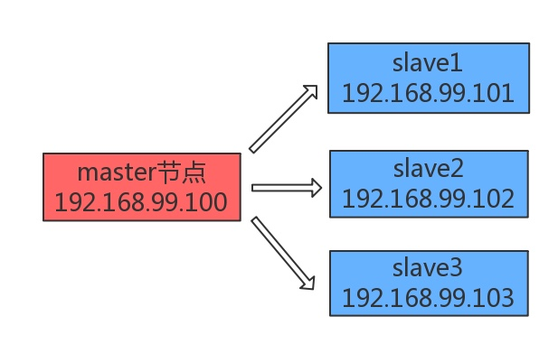
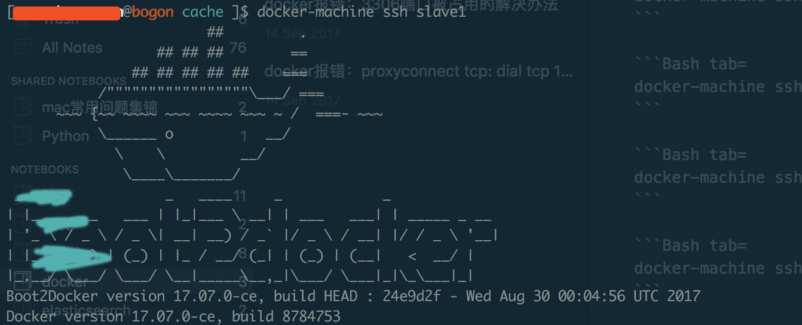
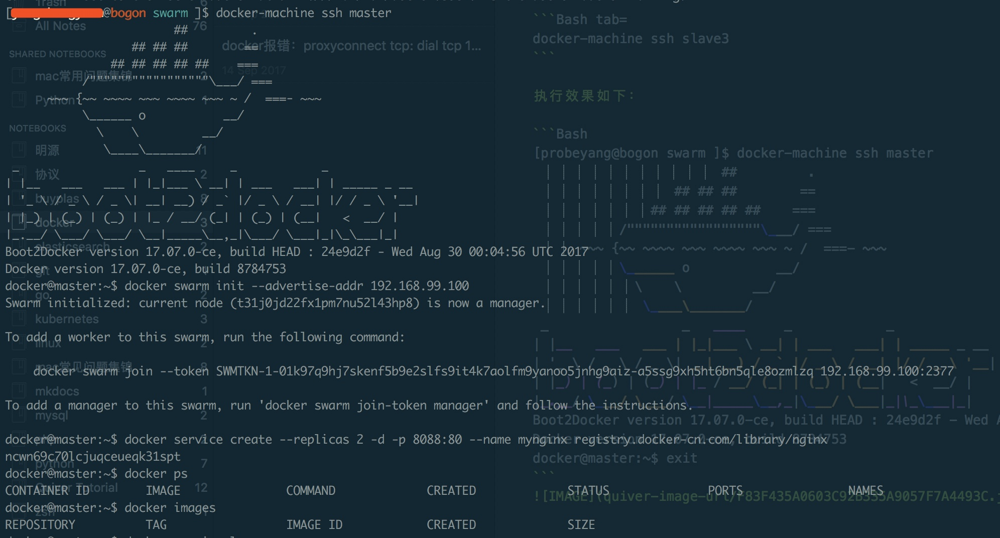
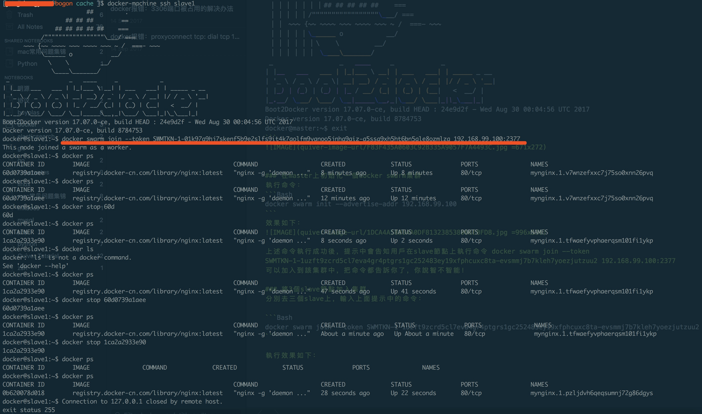

第一部分 docker swarm集群搭建
前言
相信Docker技术大家都有所了解，单个Docker能发挥的作用毕竟有限，也不便于管理，所以Docker得组集群来使用才能发挥强大的技术优势。既然要组集群那就涉及诸如Docker的资源调度、管理等等一系列问题。目前涉及Docker集群的三个主要的技术无外乎Swarm、Kubernetes、Mesos三种。从本文开始作者将会一一实践这几种主要的Docker集群技术，话不多说，现在开始。
注意：作者的kubernetes相关实践在此
环境准备
-
Mac OS X 10.13.2
-
Docker 17.09.1-ce-mac42 (21090)
-
virtualbox（虚拟集群中节点时需要）
-
boot2docker v1.8.0（在虚拟节点中起docker环境时需要）
环境搭建
节点规划如下：

我们需要4个节点（1个master + 3个slave），由于没有真实地4台物理机，所以下文中是靠docker-machine、virtualbox以及boot2docker来虚拟出4个独立IP地址的带docker环境的节点，大家注意！
环境安装：
Docker环境安装：
Tips： 以前Mac上一般是使用boot2docker这个专门为OS X上运行Docker而开发的一个轻量级的虚拟主机管理工具来安装docker，现在boot2docker这种安装方式官方已经deprecated了（当然下文中还是需要boot2docker.iso的镜像来帮助我们在虚拟的节点上起docker环境），可以直接下载docker的dmg安装包双击进行安装即可
下载的boot2docker.iso文件放到~/.docker/machine/cache目录下面（拷贝）：
[probeyang@bogon ~ ]$ cd ~/.docker/machine/cache
[probeyang@bogon cache ]$ ls
boot2docker.iso
我们选择docker CE版安装即可，下载链接如下:
https://store.docker.com/search?type=edition&offering=community
选择官方docker dmg包安装完成以后，docker-machine已经天然地集成于其中了，该工具在下文中创建虚拟节点时需要，它是一个可以在虚拟主机节点上安装docker engine的工具
virtualbox安装
由于我们搭建集群需要具备多个不同IP地址的节点，然而我们手上仅一台电脑，所以需要借助virtualbox来虚拟出多个不同IP地址的节点供我们使用需要
去官方下载virtualbox的dmg安装包，双击安装即可：
boot2docker安装
Boot2Docker是一个专为Docker而设计的轻量级Linux发型包，解决Windows或者OS X用户不能安装Docker的问题。Boot2Docker完全运行于内存中，体积小，启动快。Boot2Docker需要运行在VirtualBox中。
我使用的是brew这个mac上的包管理器安装的，非常方便，只需一行命令：
brew install boot2docker
除此之外我们还需要下载boot2docker.iso镜像在后文中进行使用： https://github.com/boot2docker/boot2docker/releases/tag/v17.07.0-ce 我们先把boot2docker.iso下好后面备用
Docker Swarm集群实验
先创建4个虚拟节点（1个master + 3个slave）
首先要将之前下载的boot2docker.iso放到/Users/你的用戶名/.docker/machine/cache/目录下，然后执行如下命令：
docker-machine create --virtualbox-boot2docker-url ~/.docker/machine/cache/boot2docker.iso master
docker-machine create --virtualbox-boot2docker-url ~/.docker/machine/cache/boot2docker.iso slave1
docker-machine create --virtualbox-boot2docker-url ~/.docker/machine/cache/boot2docker.iso slave2
docker-machine create --virtualbox-boot2docker-url ~/.docker/machine/cache/boot2docker.iso slave3
docker-machine create命令运行结果类似如下：
[probeyang@bogon swarm ]$ docker-machine create --virtualbox-boot2docker-url ~/.docker/machine/cache/boot2docker.iso master
Running pre-create checks...
(master) Boot2Docker URL was explicitly set to "/Users/probeyang/.docker/machine/cache/boot2docker.iso" at create time, so Docker Machine cannot upgrade this machine to the latest version.
Creating machine...
(master) Boot2Docker URL was explicitly set to "/Users/probeyang/.docker/machine/cache/boot2docker.iso" at create time, so Docker Machine cannot upgrade this machine to the latest version.
(master) Downloading /Users/probeyang/.docker/machine/cache/boot2docker.iso from /Users/probeyang/.docker/machine/cache/boot2docker.iso...
(master) Creating VirtualBox VM...
(master) Creating SSH key...
(master) Starting the VM...
(master) Check network to re-create if needed...
(master) Waiting for an IP...
Waiting for machine to be running, this may take a few minutes...
Detecting operating system of created instance...
Waiting for SSH to be available...
Detecting the provisioner...
Provisioning with boot2docker...
Copying certs to the local machine directory...
Copying certs to the remote machine...
Setting Docker configuration on the remote daemon...
Checking connection to Docker...
Docker is up and running!
To see how to connect your Docker Client to the Docker Engine running on this virtual machine, run: docker-machine env master
[probeyang@bogon swarm ]$ docker-machine create --virtualbox-boot2docker-url ~/.docker/machine/cache/boot2docker.iso slave1
Running pre-create checks...
(slave1) Boot2Docker URL was explicitly set to "/Users/probeyang/.docker/machine/cache/boot2docker.iso" at create time, so Docker Machine cannot upgrade this machine to the latest version.
Creating machine...
(slave1) Boot2Docker URL was explicitly set to "/Users/probeyang/.docker/machine/cache/boot2docker.iso" at create time, so Docker Machine cannot upgrade this machine to the latest version.
(slave1) Downloading /Users/probeyang/.docker/machine/cache/boot2docker.iso from /Users/probeyang/.docker/machine/cache/boot2docker.iso...
(slave1) Creating VirtualBox VM...
(slave1) Creating SSH key...
(slave1) Starting the VM...
(slave1) Check network to re-create if needed...
(slave1) Waiting for an IP...
Waiting for machine to be running, this may take a few minutes...
Detecting operating system of created instance...
Waiting for SSH to be available...
Detecting the provisioner...
Provisioning with boot2docker...
Copying certs to the local machine directory...
Copying certs to the remote machine...
Setting Docker configuration on the remote daemon...
Checking connection to Docker...
Docker is up and running!
To see how to connect your Docker Client to the Docker Engine running on this virtual machine, run: docker-machine env slave1
注意：上面若不指定boot2docker的路径：--virtualbox-boot2docker-url ~/.docker/machine/cache/boot2docker.iso，直接执行docker-machine create master创建节点时，可能会报No default Boot2Docker ISO found locally, downloading the latest release...这种错误！所以最好自己指定boot2docker.iso镜像路径
创建完4个节点以后，可以用docker-machine ls命令查看一下各个节点的情况，可以看到自动为其分配了独立的IP地址：
[probeyang@bogon swarm ]$ docker-machine ls
NAME ACTIVE DRIVER STATE URL SWARM DOCKER ERRORS
consul-machine - virtualbox Stopped Unknown
master - virtualbox Running tcp://192.168.99.100:2376 v17.07.0-ce
slave1 - virtualbox Running tcp://192.168.99.101:2376 v17.07.0-ce
slave2 - virtualbox Running tcp://192.168.99.102:2376 v17.07.0-ce
slave3 - virtualbox Running tcp://192.168.99.103:2376 v17.07.0-ce
可以看到，我们创建了1个master，3个slave的虚拟机，docker为其各自分配了不同的IP地址。
ssh接入到虚拟节点
分别开启4个独立的terminal终端，分别执行：
docker-machine ssh master
docker-machine ssh slave1
docker-machine ssh slave2
docker-machine ssh slave3
执行效果如下：
[probeyang@bogon swarm ]$ docker-machine ssh master
## .
## ## ## ==
## ## ## ## ## ===
/"""""""""""""""""\___/ ===
~~~ {~~ ~~~~ ~~~ ~~~~ ~~~ ~ / ===- ~~~
\______ o __/
\ \ __/
\____\_______/
_ _ ____ _ _
| |__ ___ ___ | |_|___ \ __| | ___ ___| | _____ _ __
| '_ \ / _ \ / _ \| __| __) / _` |/ _ \ / __| |/ / _ \ '__|
| |_) | (_) | (_) | |_ / __/ (_| | (_) | (__| < __/ |
|_.__/ \___/ \___/ \__|_____\__,_|\___/ \___|_|\_\___|_|
Boot2Docker version 17.07.0-ce, build HEAD : 24e9d2f - Wed Aug 30 00:04:56 UTC 2017
Docker version 17.07.0-ce, build 8784753
docker@master:~$ exit

在master上初始化一個docker swarm集群
執行命令：
docker swarm init --advertise-addr 192.168.99.100
效果如下：

上述命令執行成功後，提示中會告知用戶在slave節點上執行命令 docker swarm join --token SWMTKN-1-1uzft9zcrd5cl7eva4gr4ptgrs1gc252483ey19xfphcuxc8ta-evsmmj7b7kleh7yoezjutzuu2 192.168.99.100:2377 可以加入到該集群中，把命令都告訴你了，你說智不智能！
將3個slave節點加入集群
分別去三個slave上，輸入上面提示中的命令：
docker swarm join --token SWMTKN-1-1uzft9zcrd5cl7eva4gr4ptgrs1gc252483ey19xfphcuxc8ta-evsmmj7b7kleh7yoezjutzuu2 192.168.99.100:2377
執行效果如下：

註意：如果忘了docker swarm join 命令中的token命令的話，可以使用命令docker swarm join-token worker來get之
好，到此為止應該說docker swarm集群的搭建工作已經完成了，那下面在這個集群上做點實際的任務吧！
参考文献：